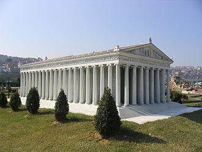

 The Temple of Artemis or Artemision (Greek: Ἀρτεμίσιον; Turkish: Artemis Tapınağı), also known less precisely as the Temple of Diana, was a Greek temple dedicated to an ancient, local form of the goddess Artemis (associated with Diana, a Roman goddess). It was located in Ephesus (near the modern town of Selçuk in present-day Turkey). It was completely rebuilt twice, once after a devastating flood and three hundred years later after an act of arson, and in its final form was one of the Seven Wonders of the Ancient World. By 401 AD it had been ruined or destroyed. Only foundations and fragments of the last temple remain at the site.
The Temple of Artemis was located near the ancient city of Ephesus, about 75 kilometres (47 mi) south from the modern port city of İzmir, in Turkey. Today the site lies on the edge of the modern town of Selçuk.
In the 7th century BC, a flood destroyed the temple, depositing over half a meter of sand and flotsam over the original clay floor. Among the flood debris were the remains of a carved ivory plaque of a griffin and the Tree of Life, apparently North Syrian, and some drilled tear-shaped amber drops of elliptical cross-section. These probably once dressed a wooden effigy (xoanon) of the Lady of Ephesus, which must have been destroyed or recovered from the flood. Bammer notes that though the site was prone to flooding, and raised by silt deposits about two metres between the 8th and 6th centuries, and a further 2.4 m between the sixth and the fourth, its continued use "indicates that maintaining the identity of the actual location played an important role in the sacred organization".
Heraclitus deposited his book "On Nature" as a dedication to Artemis in the great temple.